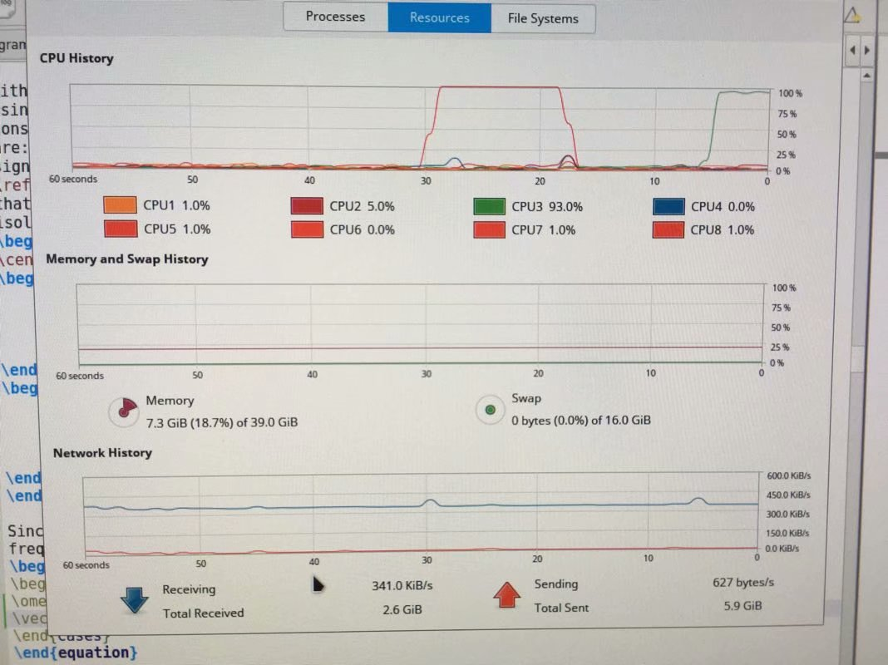
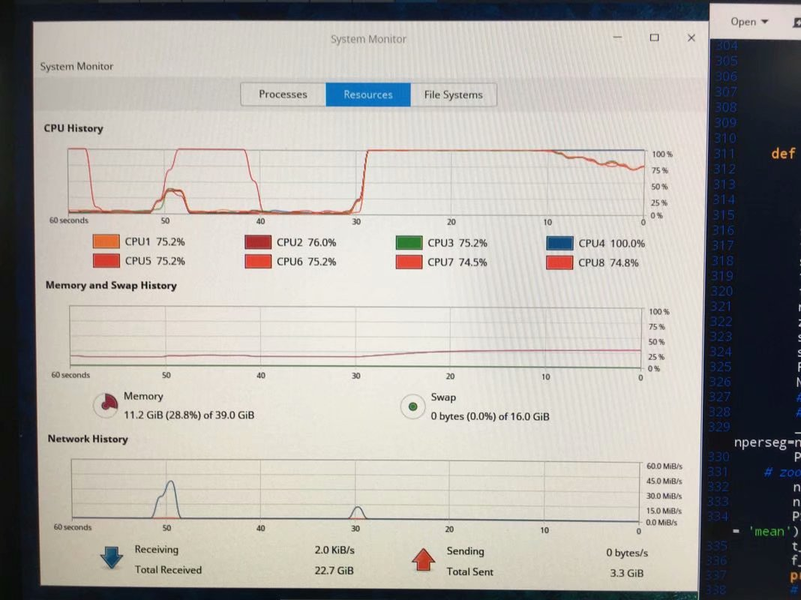

The normal python code is usually running only on one CPU core by
default. For powerful computers with multiple cores, this kind of code
will run with very low efficiency. To raise the code efficiency by using
multiple cores at the same time, it is very helpful to use CPU parallel
computation methods. Actually there are several ways to realize CPU
parallel computation [1]. For the advanced methods, you have to separate
you jobs parallel into many small parts and attribute them to different
cores. For the most simple method, you just need to upgrade the build-in
python modules even without the modification to your previous source
codes. Here, we will introduce this most easy python CPU parallel
computation approach, install Intel refined python module. In the
future, if there is some free time, the other methods will be also be
introduced with updates to this blog.
Intel parallel refined
Python
Contents of Intel python
There is an official introduction to Intel refined python modules
[2]. You can also easily check the contents of Intel refined python
modules by using python build-in pip command.
$pip search intel intel-openmp (2020.0.133) - Intel(R) OpenMP Runtime Library intel-scipy (1.1.0) - SciPy optimized with Intel(R) MKL library intel-numpy (1.15.1) - NumPy optimized with Intel(R) MKL library threat-intel (0.2.0) - Collection of the API calls for various threat intel feeds. intel-quantization (1.0) - The Python programming APIs packages for Intel® AI Quantization Tools for Tensorflow*. intel-scikit-learn (0.19.2) - scikit-learn optimized with Intel(R) Data Analytics Acceleration Library intel-tensorflow (2.2.0) - TensorFlow is an open source machine learning framework for everyone. cython_ipp (0.2.0) - Cython definitions for the Intel Integrated Performance Primitives (Intel IPP) library ipp (2019.4.243) - Intel(R) Performance Primitives pyintelowl (1.0.0) - Client and Library for Intel Owl nervananeon (2.6.0) - Intel's deep learning framework icc-rt (2020.0.133) - Intel(R) Compiler Runtime impi (2019.4.243) - Intel(R) MPI Runtime amt (0.8.0) - Tools for interacting with Intel's AMT ihextools (1.2.0) - Simple Intel hex library motmot.FastImage_ipp (0.5.5.ipp) - Pythonic API for a subset of the Intel Integrated Performance Primitives (Intel IPP) library motmot.FastImage (0.7.0) - Pythonic API for a subset of the Intel Integrated Performance Primitives (Intel IPP) library csirtg-fm (1.0.3) - The FASTEST way to consume threat intel pyMKL (0.0.3) - Python wrapper of Intel MKL routines rdrand (1.5.0) - Python interface to Intel hardware rng zorg-edison (0.0.2) - Intel Edison adapters for the Zorg framework. mkl-devel (2018.0.3) - Math library for Intel and compatible processors python-vsmclient (2.1.0-312) - Client library for Intel VSM API. ngraph-tensorflow-bridge (0.18.0) - Intel nGraph compiler and runtime for TensorFlow mkl-include (2019.0) - Math library for Intel and compatible processors undervolt (0.3.0) - Undervolt Intel CPUs under Linux tbb (2020.0.133) - Intel(R) Threading Building Blocks mkl (2019.0) - Math library for Intel and compatible processors mkl-static (2018.0.0) - Math library for Intel and compatible processors pydaal (2019.0.0.20180713) - Intel(R) Data Analytics Acceleration Library virustotal-api (1.1.11) - Virus Total Public/Private/Intel API pyrealsense2 (2.36.0.2038) - Python Wrapper for Intel Realsense SDK 2.0. arksearch (0.0.1) - Searches Intel's ARK site for processor information sparse-dot-mkl (0.5.3) - Intel MKL wrapper for sparse matrix multiplication ipp-include (2019.4.243) - Intel(R) Performance Primitives header files quartustcl (0.2) - a Python package for interfacing with Intel Quartus Tcl daal (2020.0.133) - Intel(R) Data Analytics Acceleration Library tbb4py (2019.0) - Composable Parallelism for Python with Intel(R) TBB pyrealsense2-aarch64 (2.23.0) - Python Wrapper for Intel Realsense SDK 2.0. IntelHex (2.2.1) - Python library for Intel HEX files manipulations tbb-devel (2020.0.133) - Intel(R) Threading Building Blocks header files ngraph-core (0.26.0) - nGraph - Intel's graph compiler and runtime for Neural Networks IHex (0.1.4) - A Python library for reading and writing Intel Hex files rdtsc (0.2.1) - Cycle timer wrapping the Intel x86 RTDSC instruction fasthex (0.0.1) - A fast python 3 implemenation of Intel Hex Format intelurls (0.0.5) - Parse Ingress Intel, Google Maps, and Apple Maps URLs daal-include (2020.0.133) - Intel(R) Data Analytics Acceleration Library header files ipp-devel (2019.4.243) - Intel(R) Performance Primitives for building using shared libraries ipp-static (2019.4.243) - Intel(R) Performance Primitives for building using static linking ip-inspector (0.0.11) - A tool for proving intel on IP addresses and enabling detection and response. nlp-architect (0.5.4) - Intel AI Lab NLP and NLU research model library motmot.realtime_image_analysis-ipp (0.5.9) - several image analysis functions that require Intel IPP and FastImage inteltime (1.0.5) - Intel checkpoint and cycle calculator for Niantic Lab's Ingress(tm) motmot.realtime_image_analysis (0.8.0) - several image analysis functions that require Intel IPP and FastImage pysip (1.1.0) - A thin wrapper around requests to interact with the Simple Intel Platform (SIP). cybercure (0.4.3) - Python SDK to integrate cybercure.ai cyber intel feeds quickly and easily pycrc32c (2.0.2) - crc32c for Python; uses the Intel CRC32 instruction and thus requires SSE4.2 numkl (0.0.4) - A thin cython/python wrapper on some routines from Intel MKL daal-static (2020.0.133) - Intel(R) Data Analytics Acceleration Library for building using static linking daal-devel (2020.0.133) - Intel(R) Data Analytics Acceleration Library for building using shared libraries nuc-led (0.2) - A python API for control of the front LEDs of Intel NUC7i[x]BN and NUC6CAY NUCs. Wiring-x86 (1.0.0) - A Python module to use most Arduino wiring functions on Intel® Arduino capable boards. bincopy (17.7.1) - Mangling of various file formats that conveys binary information (Motorola S-Record, Intel HEX and binary files). mkl-random (1.0.1.1) - NumPy-based implementation of random number generation sampling using Intel (R) Math Kernel Library, mirroring numpy.random, but exposing all choices of sampling algorithms available in MKL.
Installation of Intel
python module
Using pip commands, you can easily install the Intel python
modules.
1 2
$pip install intel-numpy $pip install intel-scipy
For the most frequent scientific analysis, install the intel-numpy
and intel-scipy will be enough, the related packages will be installed
automatically. If you have other requirements, you can search whether
there is available Intel refined python module and install it. After
installation of Intel python module, the original python module will be
covered. For example, if you import numpy, you actually will be using
intel-numpy module instead. In this way, you don't even need to make any
modification to you original python source codes to achieve the CPU
parallel computation benefits.
Comparison
with/without use of Intel python modules

Python code running on a single core with
original modules.

Python code running on all 8 cores with
upgraded Intel modules.
From above figures we can see before the installation of Intel python
module, the PSD code runs only on a single CPU core, after the
installation, the 8 CPU cores are fully occupied during the running of
the same python source code. This is really the most convenient way to
achieve CPU parallel computation with high efficiency.